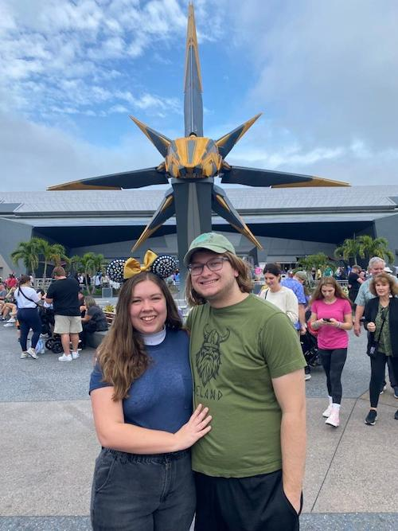

This is a little bit about me.
Below is a picture of my most recent visit to Disney World, back in December. My partner and I had so much fun!
Before going into what I'd like to do in the future, I'll look back on my past that has prepared me for my future career. I've previously interned in the following positions:
After I graduate this August, I'd like to stay local in the Central Florida area and work with a representative from Orlando or Gainesville. Eventually, I'd like to return to Washington, D.C. and work on Capitol Hill again. My future dream job is to be White House Press Secretary.